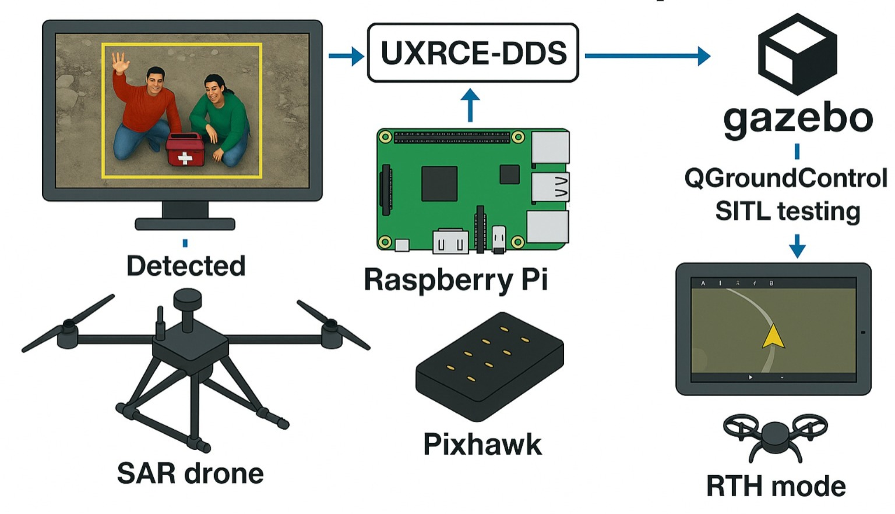

Robotics · Embodied AI · Research
Narendhiran Vijayakumar
I am a research assistant at IIIT Hyderabad , working on robotics and embodied AI. I completed my B.Tech. in Mechanical Engineering with a minor in Computer Science at NIT Tiruchirappalli .
My work sits at the intersection of task and motion planning, robot learning, long-horizon manipulation, and visual perception. I am especially interested in systems that reason through partial observability, recover from newly discovered constraints, and connect learned representations to reliable robot execution.
Research focus TAMP / foundation-model planning / long-horizon manipulation / latent representations / embodied perception
Hyderabad, India · 2026
Research affiliations / collaborations
01
Research & Publications
Selected work in planning, perception, autonomous systems, and assistive robotics.
2026 · IIIT Hyderabad
Plan Along the Way: Event-Triggered Foundation-Model Planning for TAMP Execution in Partially Observable Manipulation
P. Ojha*, Narendhiran Vijayakumar , Nav Singhal, G. Varma, A. Thomas*
RA-L · 2026
Foundation-model planning for task-and-motion execution under partial observability, with event-triggered reasoning during long-horizon manipulation.
In preparation · UT Dallas
Same Scene, Different Story: Evaluating Robot Perception Across Scene Phases in the Wild
I. Kadosh*, Jishnu P*, Narendhiran Vijayakumar , S. Haneesh, J. Wang, Y. Xiang
ICRA 2027 target
A real-world benchmark for evaluating robot perception as the same physical scene changes across static and dynamic phases.
2026 · IIT Bombay / NIT Trichy
AURASeg: Attention-Guided Upsampling with Residual Boundary-Assistive Refinement for Drivable-Area Segmentation
Narendhiran Vijayakumar* , M. Sridevi
arXiv · 2026
Boundary-aware drivable-area segmentation using attention-guided decoding and residual boundary refinement for resource-constrained navigation.
Assistive Robotics
In preparation · Monash University
Fuzzy Logic–GRU Framework for Real-Time Sit-to-Walk Joint Torque Estimation in Robotic Exoskeletons
Narendhiran Vijayakumar* , C. Perera, A. Agape
Monash University Malaysia
Encoder-decoder GRU torque forecasting paired with Mamdani fuzzy inference for real-time hip and knee assistance during sit-to-walk transitions.

2025 · Autonomous systems
Design and Structural Validation of a Micro-UAV with On-Board Dynamic Route Planning
Narendhiran Vijayakumar* , I. Ravikumar, R. Sundhar
Springer International Conference on MRAE · 2025
Micro-UAV design and validation with onboard perception, ROS 2 communication, and dynamic route planning for autonomous aerial tasks.
02
Selected Projects
Research prototypes and competition systems across robot learning, perception, planning, and control.
Current · 3D perception / planning
GeoClean-3D
Perception-to-planning for cleaning irregular 3D basin surfaces through reconstruction, surface parameterization, and geometry-aware actions.
2025 · NTU Singapore
Moto-Memory-VLA
Latent-action retrieval with InfoNCE learning, FAISS subtrajectory memory, dynamic time warping, and cosine-similarity retrieval for embodied control.
Repository
2025–26 · Monash University
Fuzzy-GRU Exoskeleton
A lightweight encoder-decoder GRU with Mamdani fuzzy inference for real-time sit-to-walk hip and knee torque estimation.
Repository
2024 · SAE AeroTHON
Autonomous UAS
Competition quadcopter with ROS 2 communication, onboard SSD-MobileNet-v2 inference, PX4 integration, and dynamic SWEEP / SERVICE route replanning.
Project
2024 · MathWorks Minidrone
Parrot Mambo Autonomy
Line-following autonomy using image processing, Stateflow planning, cascaded PID control, and virtual target point tracking in Simulink.
Project
2024 · Smart India Hackathon
PixelBot
Multimodal conversational image system for segmentation, inpainting, and generation using LLaVA, SAM2, GLIGEN, and conversational memory.
Repository
03
Awards & Service
Selected recognition
Smart India Hackathon 2024 — Finalist Built PixelBot, a multimodal conversational image system; placed second in the first stage. SAE AeroTHON 2024 — Top 15 Led autonomous UAS development in a national design, build, and fly competition.
Leadership & outreach
Third Dimension — Technical Head Developed autonomous drones, led workshops, and represented NIT Trichy. Maximus — Vice President Designed the induction pipeline, curated machine-learning projects, and mentored juniors. IGNITTE / FIRST Robotics Led free JEE physics training for rural students and volunteered in middle-school robotics outreach.
Narendhiran Vijayakumar · Robotics / Embodied AI
Last updated August 2026